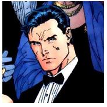

Batman is a fictional comic character created by artist Bob Kane and writer
Bill
Finger
Batman first appeared in DC comics in the year 1939 and soon became very popular. Batman is a superhero
who appears in American comic books published by DC Comics. Batman was created by artist Bob Kane and
writer Bill Finger, and debuted in the 27th issue of the comic book Detective Comics on March 30, 1939.
In the DC Universe continuity, Batman is the alias of Bruce Wayne, a wealthy American playboy,
philanthropist, and owner of Wayne Enterprises based in Gotham City. Kane, Finger, and future DC writers
accompanied Batman with supporting characters, including his sidekick Robin, allies Alfred Pennyworth
and James Gordon, and foes such as Catwoman, the Scarecrow, the Penguin, and his archenemy, the Joker.
Batman's origin story features him swearing vengeance against criminals after witnessing the murder of
his parents Thomas and Martha; he trains himself physically and intellectually, crafts a bat-inspired
persona, and monitors the Gotham streets at night.
Kane conceived Batman in early 1939 to capitalize on the popularity of DC's Superman; although Kane
frequently claimed sole creation credit, Finger substantially developed the concept from a generic
superhero into something more bat-like. The character received his own spin-off publication, Batman, in
1940. Batman was originally introduced as a ruthless vigilante who frequently killed or maimed
criminals, but evolved into a character with a stringent moral code and strong sense of justice. Unlike
most superheroes, Batman does not possess any superpowers, instead relying on his intellect, fighting
skills, and wealth. The 1960s Batman television series used a camp aesthetic, which continued to be
associated with the character for years after the show ended. Various creators worked to return the
character to his darker roots in the 1970s and 1980s, culminating with the 1986 miniseries The Dark
Knight Returns by Frank Miller.
DC has featured Batman in many comic books, including comics published under its imprints such as
Vertigo and Black Label. The longest-running Batman comic, Detective Comics, is the longest-running
comic book in the United States. Batman is frequently depicted alongside other DC superheroes, such as
Superman and Wonder Woman, as a member of organizations such as the Justice League and the Outsiders. In
addition to Bruce Wayne, other characters have taken on the Batman persona on different occasions, such
as Jean-Paul Valley / Azrael in the 1993–1994 "Knightfall" story arc and Dick Grayson, the first Robin,
for a three-year period from 2009 to 2011. DC has also published comics featuring alternate versions of
Batman, including the incarnation seen in The Dark Knight Returns and its successors, the incarnation
from the Flashpoint (2011) event, and numerous interpretations from Elseworlds stories.
One of the most iconic characters in popular culture, Batman has been listed among the greatest comic
book superheroes and fictional characters ever created. He is one of the most commercially successful
superheroes, and his likeness has been licensed and featured in various media and merchandise sold
around the world; this includes toy lines such as Lego Batman and video games like the Batman: Arkham
series. Batman has been adapted in live-action and animated incarnations, including the 1960s Batman
television series played by Adam West and in films by Michael Keaton in Batman (1989) and Batman Returns
(1992), Christian Bale in The Dark Knight Trilogy (2005–2012), and Ben Affleck in the DC Extended
Universe (2016–present). Kevin Conroy, Jason O'Mara, and Will Arnett, among others, have provided the
character's voice.
Abilities
- Genius-level intellect
- Peak human physical and mental conditioning
- Expert martial artist and hand to hand combtant
- Utilizes high-tech equipment and weapons
Partnerships
- Robin
- Batgirl
- James "Jim" Gordon
- Green Arrow
- Catwoman
- Superman
- Wonder Woman
Secret Identity: Bruce Wayne
;Batman's secret identity is Bruce Wayne, a wealthy American industrialist who resides just outside of Gotham City. As a child, Bruce witnessed the murder of his parents, Thomas Wayne and Martha Wayne, which ultimately led him to craft the Batman persona and seek vengeance against criminals. Wayne averts suspicion by acting the part of a superficial playboy idly living off his family's fortune, which was amassed through investment in real estate before the city became a bustling metropolis, and the profits of Wayne Enterprises, his inherited conglomerate. Bruce Wayne resides just outside of Gotham City in Wayne Manor. He supports philanthropic causes through his nonprofit Wayne Foundation but is more widely known as a celebrity socialite. In public, he appears frequently in the company of high-status women, which encourages tabloid gossip. Although Bruce Wayne leads an active romantic life, crime-fighting accounts for most of his time.
Batman Villians
| NAME | FIRST APPEARANCE | ABILITIES |
|---|---|---|
| Joker | Batman #1 (April 1940) | Criminal mastermind, expert chemist, utilizes weaponized props and toxins |
| Ra’s al Ghul | Batman #232 (June 1971) | Genius-level intellect, peak physical conditioning, superior strength and stamina, master martial artist and hand-to-hand combatant for centuries |
| Two face | Detective Comics #66 (August 1942) | Schizoid criminal mastermind obsessed with duality, extensive knowledge in law, experienced hand-to-hand combatant and detective |
| Bane | Batman: Vengeance of Bane 1 (January 1993) | Brilliant military strategist, trained mercenary, peak human physical conditioning, venom enhanced strength and durability |
| Black Mask | Batman #386 (August 1985) | Brilliant tactician and strategist, crime boss with powerful underworld connections, skilled marksman, advanced stamina and endurance |
Batman Movies